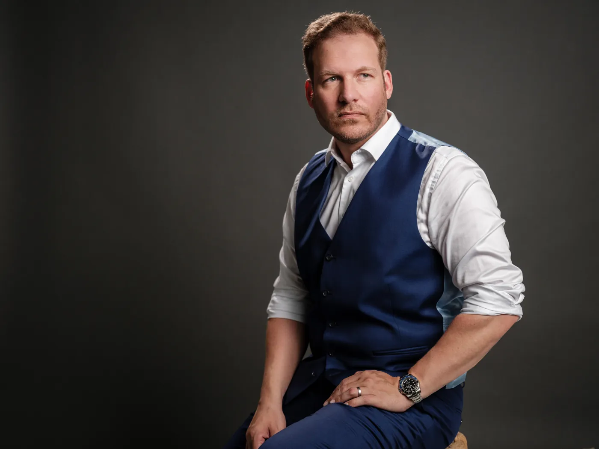
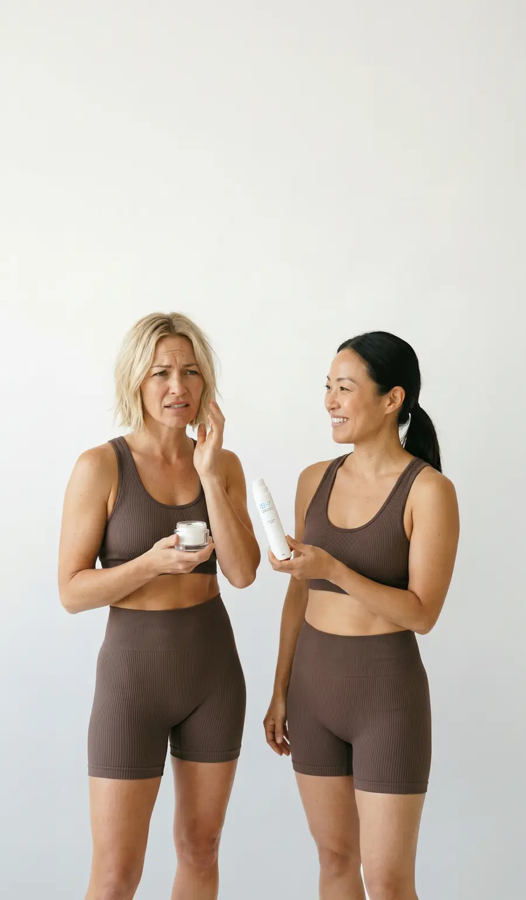

"Mich fasziniert, was möglich wird, wenn wir Wissen neu verbinden."
Michael Rohrmair, Gründer, IB-7 Beauty Tech GmbH
Unsere Geschichte
Ich möchte Hautpflege schaffen, bei der nicht du herausfinden musst, was zusammenpasst.
Ich bin Michael Rohrmair, Gründer von IB-7. Beauty fasziniert mich, weil hier so vieles zusammenkommt: Natur, Forschung, persönliche Rituale und der Wunsch, sich in der eigenen Haut wohlzufühlen.
Hinter einer Creme steckt enorme Komplexität. Vor deinem Spiegel soll sich Pflege trotzdem einfach anfühlen.
Die meisten Pflegeprodukte werden isoliert entwickelt, ohne zu wissen, was davor oder danach auf die Haut kommt. Toner von A, Serum von B, Creme von C: keine dieser Formeln wurde für die anderen gemacht.
Hautpflege, die nicht einer einzelnen Tradition folgt, weil sie gerade Trend ist, sondern alles Wissen objektiv erfasst und daraus die besten Produkte erschafft.
Deshalb hat IB-7 zuerst das Ritual berechnet und es dann auf fünf Produkte aufgeteilt. Heute gibt es die ersten zwei: THE PULSE und THE AURA, das Perfect Duo.
Dafür hat THE MIND ausgewertet, was kein Mensch je lesen könnte. Was du kaufst, sind zwei geprüfte Formeln, entwickelt in Austria.
"Versprechen zählen bei uns nur mit Beleg."
Haltung bei IB-7
Sorgfalt aus einem streng regulierten Umfeld. Werkzeuge aus der Technologie.
Mein Weg als Unternehmer führte mich in die Medizinproduktebranche und zur künstlichen Intelligenz. Aus dem regulierten Umfeld nehme ich den Respekt vor Anforderungen und Nachweisen mit und den Anspruch, Produkte für Menschen mit besonderer Sorgfalt zu entwickeln. IB-7 ist Kosmetik und gibt keine medizinischen Versprechen.
Meine Leidenschaft für Technologie und die Freude am Bauen eigener Systeme haben mir gezeigt, wie sich umfangreiches Wissen systematisch verknüpfen lässt. So bekam meine Idee eine Richtung: Zusammenhänge erschließen, die sonst niemand findet, und daraus durchdachte Hautpflege entwickeln.
Altes Wissen. Neue Möglichkeiten.
Über Jahrtausende haben Menschen auf allen Kontinenten Pflanzen erforscht und ihre Anwendungen überliefert. Mich fasziniert, wie viel Neugier in alten Schriften steckt und welche Fragen daraus für die heutige Forschung entstehen: Was lässt sich lernen? Was hält einer wissenschaftlichen Prüfung stand?
Ich wollte nicht zwischen altem Wissen und neuer Forschung wählen, sondern beides verbinden, über alle Traditionen und Richtungen hinweg. Der Pool an Beauty-Wissen ist für Menschen schlicht zu groß, um ihn sinnvoll zu verknüpfen. Für unsere Technologie nicht.
Du sollst nicht zur Expertin für jede Wirkstoffkombination werden müssen.
Du willst das Beste aus deiner Haut holen. Meine Vision dafür ist ein überschaubares, aufeinander abgestimmtes Ritual: wenige, bewusst gewählte Schritte für deinen Alltag. Intelligenz statt Zufall.
Unsere Methode entdeckenDuo
Modular nutzbar: Das Perfect Duo reicht für den Start, zwei Formeln, ein Ritual.
Ritual
Später das ganze Ritual aus fünf Produkten, je nachdem, was du möchtest.
Zusammen
Unsere Produkte sind auch einzeln Helden. Ihr volles Potenzial entfalten sie gemeinsam.
Premium. Nicht Luxus.
Kein vergoldeter Tiegel, kein Duft-Theater
Dafür ein Airless-Dispenser, der die Wirkstoffe bis zum letzten Pumpstoß schützt. THE PULSE ist duftfrei, THE AURA hat einen dezenten Duft, beides steht offen auf den Produktseiten.
50 ml, wo die Kategorie 30 ml gibt
Mehr Inhalt pro Dispenser: ca. 12 Wochen bei zwei Anwendungen täglich.
Preis über Wirksamkeit, nicht über Status
Der Preis richtet sich nach Wirkstoffen und Konzentration, nie nach Prestige. Grundpreis und Preis pro Anwendung siehst du auf jeder Produktseite.

Geprüft, bevor du es bist.
Dermatologie: Irritationspotenzial 0,00
Beide Formeln sind im Patch-Test dermatologisch getestet: Irritationspotenzial 0,00 bei 25 Proband:innen über 72 Stunden, von einer Dermatologin freigegeben. Alle Belege findest du auf der Seite Geprüft.
Airless statt Tiegel
Kein Sauerstoff, keine Finger im Produkt, präzise Dosierung, fast vollständige Restentleerung, blickdicht. 50 ml, wo die Kategorie 30 ml gibt.
30 Tage geöffnet testen
Überzeugt dich ein Produkt nicht, schickst du es auch geöffnet und benutzt zurück, ohne Angabe von Gründen, und bekommst dein Geld zurück.
Herkunft und Haltung
IB-7 Beauty Tech GmbH, entwickelt in Austria. Verpackung lizenziert über ARA (AT) und Grüner Punkt (DE). Tierversuchsfrei: Weder Rohstoffe noch Produkte werden an Tieren getestet.
Unsere Werte
Wissen
Jahrtausende Erfahrung und aktuelle Forschung, objektiv ausgewertet. Wissen statt Trend.
Transparenz
Volle INCI, offene Hinweise zu Duft und Silikonen, ehrliche Zeitangaben.
Verantwortung
Entwickelt in Austria. Ein österreichisches Unternehmen, erreichbar und verantwortlich.
IB-7
IB steht für Inner Beauty. Die 7 gilt in vielen Kulturen als besondere Zahl, bei uns steht sie für ein Prinzip: die richtige Anzahl an Wirkstoffen. Genug, damit eine Formel viel kann, und wenige genug, dass jeder Wirkstoff in wirksamer Konzentration bleibt.

Wir sehen dich.
Du willst das Beste aus deiner Haut holen, ohne selbst herausfinden zu müssen, was zusammenpasst.
Du schätzt Wissenschaft genauso wie Ruhe im Badezimmer: weniger Schritte, nichts doppelt, nichts, was fehlt.
Darum haben wir zuerst das Ritual berechnet und dann die Produkte.
Und wir sind für dich da, wenn du Fragen hast.
Zum Perfect Duo
Wie erreichst du uns?
kontakt@ib-7.comIB-7 Beauty Tech GmbH[PLATZHALTER] Adresse
Antwort innerhalb von 1 Werktag.
Inside IB-7
Erfahre zuerst, wenn die nächste Rolle fertig ist. Wir schreiben selten, dafür mit Inhalt.